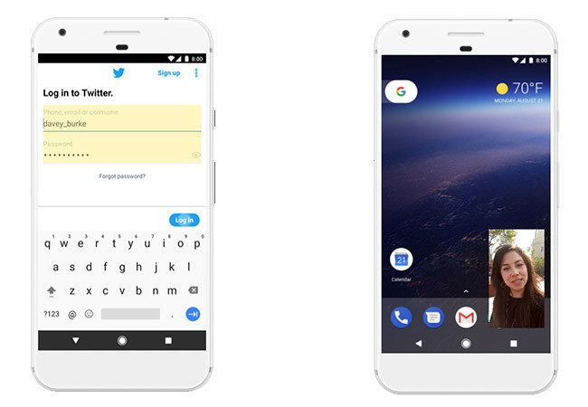

Android 8.0 Oreo
Android Oreo veía la luz el 21 de agosto de 2017. Una vez más, Google debía poner algo de orden en un sistema cada vez más aquejado con la fragmentación. Llegaba así Project Treble, una buena promesa de actualizaciones más rápidas, al menos en teoría.

Project Treble es la estrella de Android Oreo. Una nueva arquitectura modular del sistema para facilitar el proceso de actualizar un terminal y, teóricamente, lograr que lleven menos trabajo y, por tanto, te lleguen antes. Eso sí, probablemente no veremos su impacto hasta dentro de unos años.
El modo Picture-in-Picture deja de ser exclusivo de Android TV y llega también a los teléfonos, y los iconos redondos de Nougat ahora pueden tomar cualquier forma: llegan los iconos adaptativos. Las notificaciones se llevan probablemente la mayor cantidad de cambios con los canales de notificacion, las insignias de notificación, las notificaciones multimedia rediseñadas y la posibilidad de silenciar notificaciones.
Otra novedad importante es la API de autocompletado de formularios, que puedes usar también en aplicacionese y no solo en páginas web. También hay tiempo para preocuparse por el rendimiento: Oreo se pone duro con las aplicaciones en segundo plano, reduciendo el uso de batería y datos.
Android Oreo 8.1 llegaba cuatro meses más tarde, en diciembre de 2017, con unos cuantos cambios visuales sutiles y, por supuesto, la colocación correcta del queso en el emoji de la hamburguesa. Android Oreo 8.1 se desdoblará en una versión especial GO, para móviles con poca RAM.